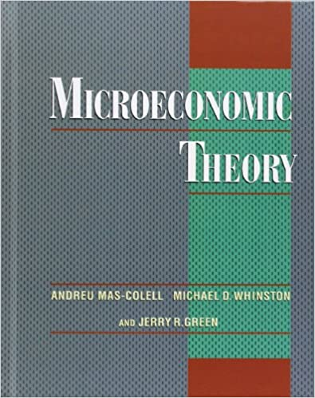
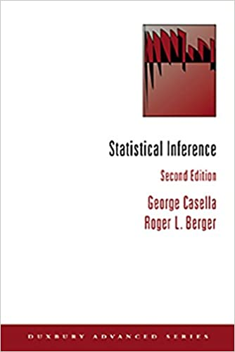

I am an Aalto University student turning to a programmer.
I am a fan of Microeconomic Theory.
I have solved every exercise in the book and tried to come up with a new idea about economic theory but haven't had one yet.
Econ has been increasingly in rapid development, playing a supplemental role in favor of a more harder science, like Statistics. A staple of which is Statistical Inference.
The  has become notorious among PhD students in economics the way  has been for students in Statistics.
No book can ever be finished. While working on it we learn just enough to find it immature the moment we turn away from it.